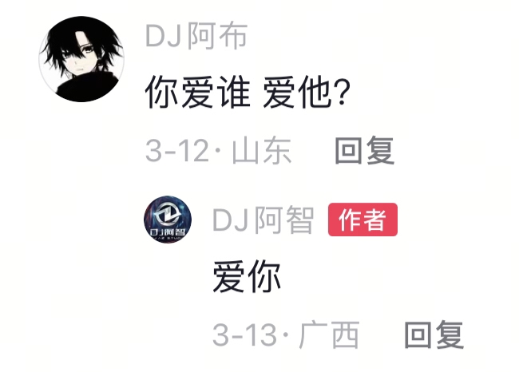
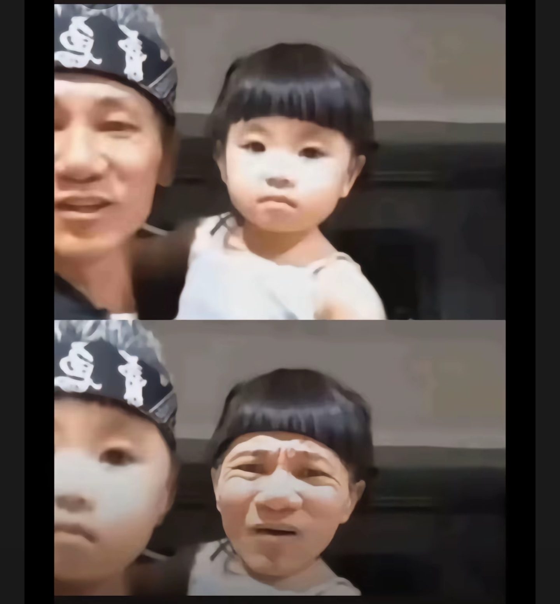
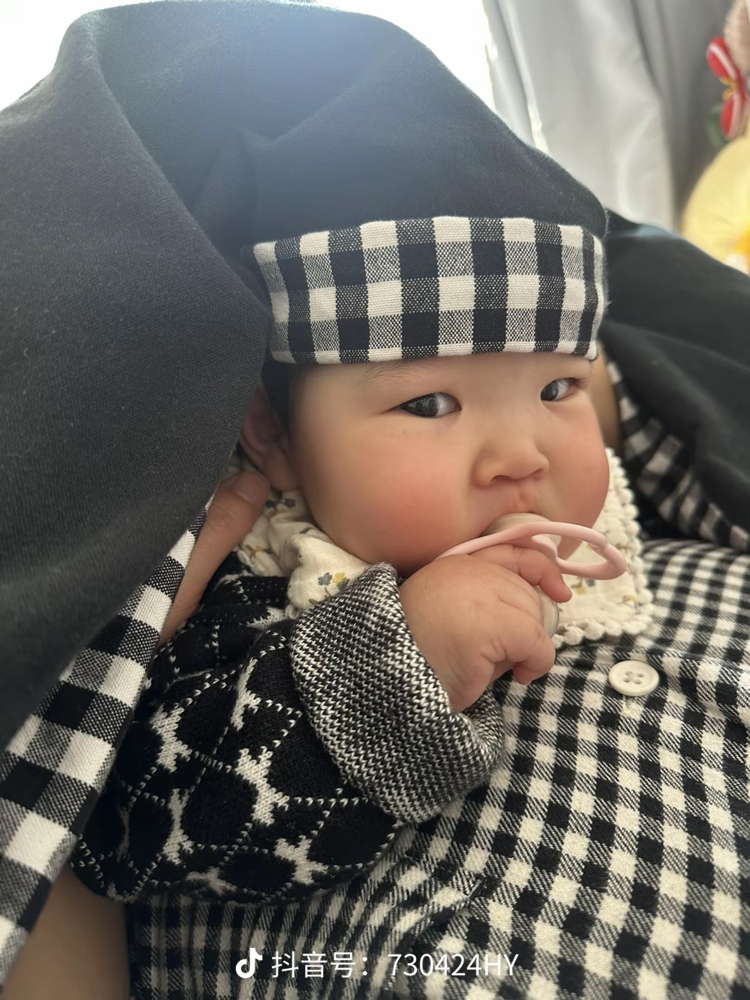
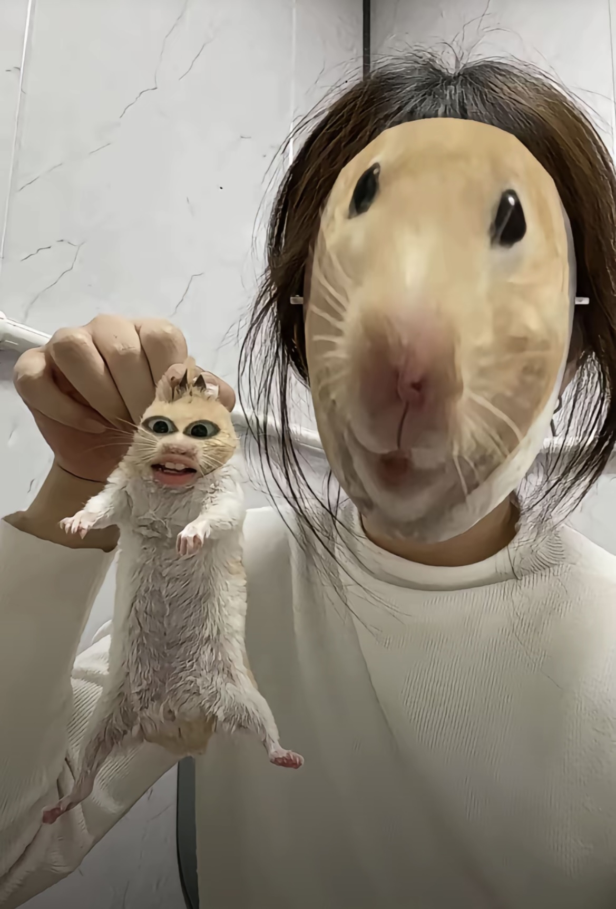
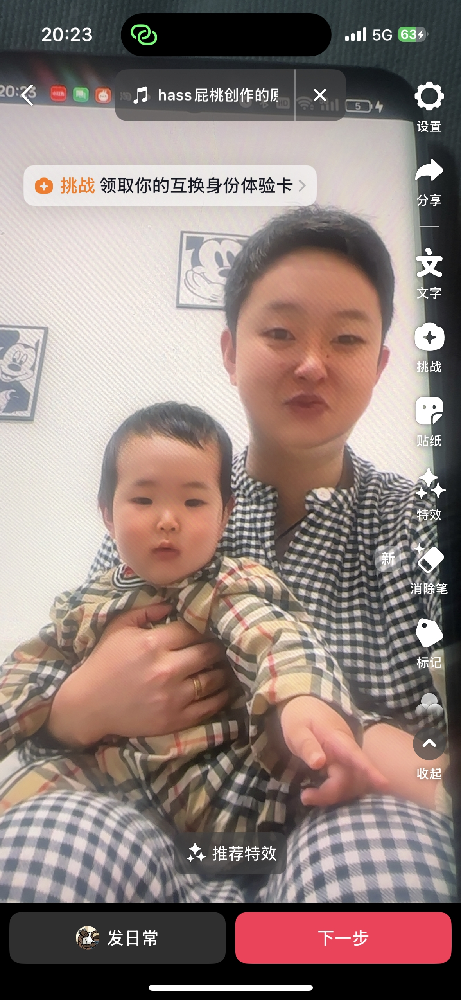
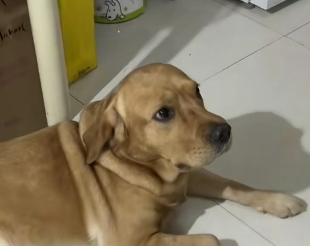
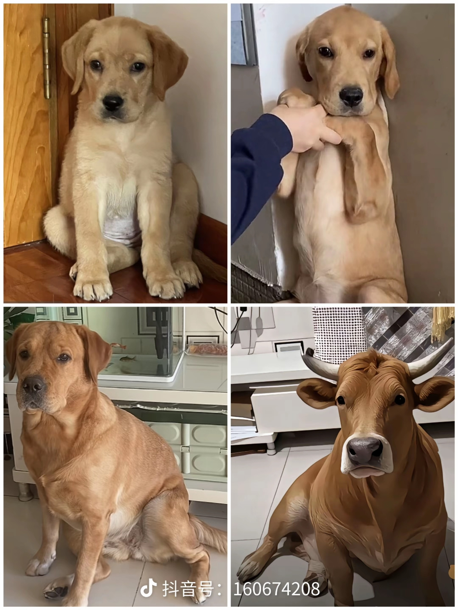
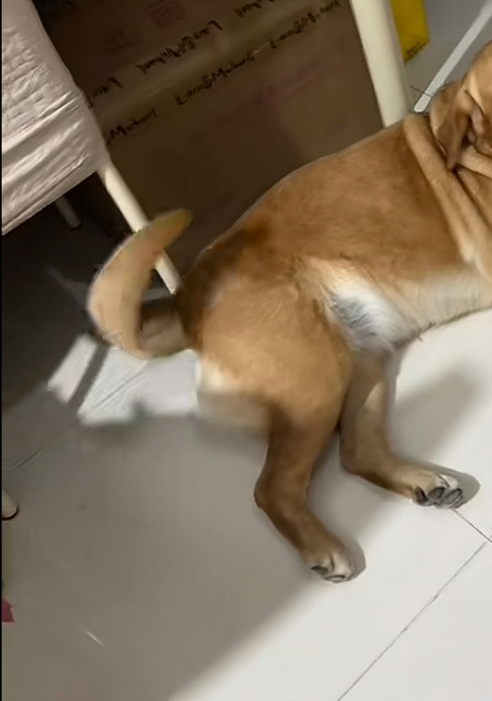

一群少女在敌对领地的大街上喝酒畅欢一宿天亮衣衫不整的遣送回去，细思及恐[石化]
”你看,仍有微弱的文明曙光这野蛮的屠宰场,曾经被称为人类。”——《布达佩斯大饭店》
酒神的祭司啊，那很正常了[看]
明天想看啥： 1.男人竟用大腿生了个娃？ 2.两个男人半路偶遇半裸美女？
是啊，，老人家思想超前，社会的发展得多少人的付出，中华民族是了不起的民族
小时候家里只有一辆自行车，看九寸黑白电视，现在开着二十多万的汽车骑着二十多万的摩托车，医生让我少吃肉多吃点青菜……[赞][赞]
兴尽悲来，识盈虚之有数
他前半生积的德只为躲这一刻的灾，所以，你只管善良，剩下的交给天意
教语文的周老师[捂脸]
我十四五的时候我舅妈喜欢穿黑丝人还漂亮……我青春期全幻想她了[捂脸]然后寻思撑死胆大的饿死胆小的，就跟她表白了，结果她不同意，后来不敢面对她不敢见她躲着她，她可能怕被人看出端倪隔了半个月直接告我妈了，合欢宗一代天骄就此陨落
我小学时候我舅妈刚有二胎，天天涨奶。还问我吃不吃。我都四五年级了。
多年后：他不是人，他是畜牲[看]
我外甥也是的，结果高高兴兴的洗完澡上来就把我手机抢走打王者去了，原来在我这可以合理玩王者没人管他才来的
哪有外甥和舅妈睡的。除非还是抱在手里的
巅峰
可是我的猫巨挑食，除了猫粮，啥都不吃
鼠鼠：得肺癌需要十年烟龄，而我的寿命只有两年，追的上我吗肺雾[微笑][微笑][微笑]
前有榔狗，后有烟鼠[看]
烟瘾都整出来了
最合理的解释就是皇帝的肠道菌群乱了，给他补补益生菌
原来熬夜就能修无情道[坏笑]
学生不语，只是一味沉默[憨笑][憨笑][憨笑]
什么你说熬夜然后中的奖？
那我高中那三年是怎么活过来的
那初中高中念完现在是不是该痴呆了[憨笑][强壮]
我就说我情绪为什么越来越稳定了。[憨笑]
难怪修仙的有点不近人情，合计睡太少了
DJ大舞台，有图你就来[舔屏]
让我逮到了吧[愉快] 
[看] 
不小心点到特效[捂脸][捂脸]
女鹅女鹅（搞笑女也是女鹅） 
孩子：还没好好感受就老了[苦涩]
谁看过他们的[捂脸][捂脸]
[泪奔][泪奔] 
一开始反应不上来以为是侏儒症没敢笑
孩子：我咋长这样..
帮你们还原了 
一开始不敢笑，以为是特殊人群[流泪]
丈夫在锅里，儿子在胃里
姐搅一下锅吧 姐夫快糊了
“这是我家先生种的金桔” “这是用我家先生种的金桔”
妈妈可以唱timemachine吗求求了[流泪]
有种刚把老公孩子煮了还能情绪稳定边唱歌边削苹果的感觉[愉快]
“吃苹果吗？我老公种的”
“金桔是我老公种的，很甜，你尝尝”突然就想起了这个[宕机][宕机][宕机][宕机]
“一个男人，谁让他吃两家饭呢”
忘带钥匙在门口的老公：
姐夫现在几块了[憨笑]
削苹果的声音是肉从骨头撕裂，刀碰到杯子的声音是刀剑划过骨头[泣不成声]
躲在卧室的父子俩：[微笑]
“他的嗓音是上天精挑细选挑出来的，可是却被婚姻的枷锁锁住了脚步”
身后满墙的奖状说明，学习不好就得失眠[看][看][看]
这个感觉特别像姐夫被整没了 而咱姐还没忘他要吃的苹果
姐你别唱了，我害怕[流泪]
谢谢妈妈[爱心]
姐夫是几块了（无恶意）
谁还记得远方传来风笛的梗[捂脸]
听一下“锈湖主题曲”晚上听好听信我[赞]
为什么我听这首歌压抑呀？明明旋律是欢快的，但是心里面就是感到压抑。
张啵啵：一天天跟有病似的
把最近干的坏事都想了一遍[微笑][微笑][微笑] 
啵啵和格子裤脑门上同款褶子[捂脸]
我发现啵啵是个装狗，明明很开心但装深沉[笑哭][笑哭][笑哭]
张啵啵成长日记 
应该找一群不认识的人啊，就是那种遛狗途中突然冲过来一群人冲着啵啵就开始尖叫的那种，哈哈哈
啵啵：想让我回应你们啊？去，去摁去
啵啵其实还是挺配合的，尾巴在帮你们找节奏呢[看] 
一想到张啵啵是母的就想笑
敢放全国任意金
吃一颗就不会被暴击了
已经联系好了 明早八点交房[流泪]
Read more: